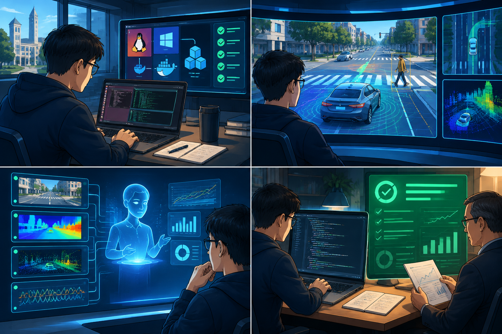

成本高
车辆、传感器、测试场地和维护周期，限制了实验规模和开放频次。
2026 “人工智能+”虚拟仿真实验教学项目
从真实仿真，到可解释的 AI 实验闭环。
01 / The Problem
真实车辆和真实道路能带来临场感，但很难支撑每一位学生反复试错、观察和复盘。
车辆、传感器、测试场地和维护周期，限制了实验规模和开放频次。
行人、车辆、信号灯和天气每次都在变化，同一个实验很难稳定重跑。
如果 AI 只是一张聊天侧栏，就无法真正进入实验过程、证据和评价。
02 / Project Positioning
以本地 Linux 仿真、远程自学课程网站和本地 Apollo_Harness 实验助手为支撑，围绕 Planning 连接定位、感知、预测、控制与仿真平台，让学生完成可复核的城市道路自动驾驶实验。

03 / Learning Loop
确认 Docker、aem、Apollo 和 DreamView 可用。
启动地图、SimControl 和规划控制模块。
采集 planning、control、localization 等核心 channel。
检查 TTC、加速度、Jerk、急刹和失败帧。
修改配置或代码，再次验证，形成前后对比。
04 / Real System
网页负责课程、任务和报告展示；真实仿真、record、评分和 AI 报告问答在本地 Apollo_Harness 中完成。
 ENVIRONMENT → PLANNING → CONTROL
ENVIRONMENT → PLANNING → CONTROL05 / Apollo_Harness
本地技能执行器 + 证据存储 + DeepSeek 解释器，围绕环境、代码、数据和评分形成可追溯的实验协作链。
检查 Docker、aem、buildtool 和 DreamView，解释环境失败原因。
围绕 Scenario、Stage、Task、参数和日志，给出最小排查路径。
生成 record、channel 汇总、CSV 和图表，帮助确认数据是否有效。
解释 TTC、加速度、Jerk、急刹和未通过帧，提出下一轮优化方向。
06 / Real Evidence
当前人行道避让实验已完成一次真实本地自评。它证明了数据链路可用，也明确保留了尚未解决的 TTC 问题。
07 / Current Foundation
围绕人行道避让单场景，已经完成从课程、仿真、Apollo_Harness 到报告的完整验证；
不是只有一个页面或一份概念方案。
08 / Curriculum
沿着 Apollo Planning 源码，把 C++ 语法、Scenario / Stage / Task 和真实场景逐层串起来。

09 / Architecture
网页不承担仿真计算；真实运行发生在本地 Apollo，Harness 把证据整理成可解释、可复核的报告。
10 / Teaching Value
11 / Roadmap